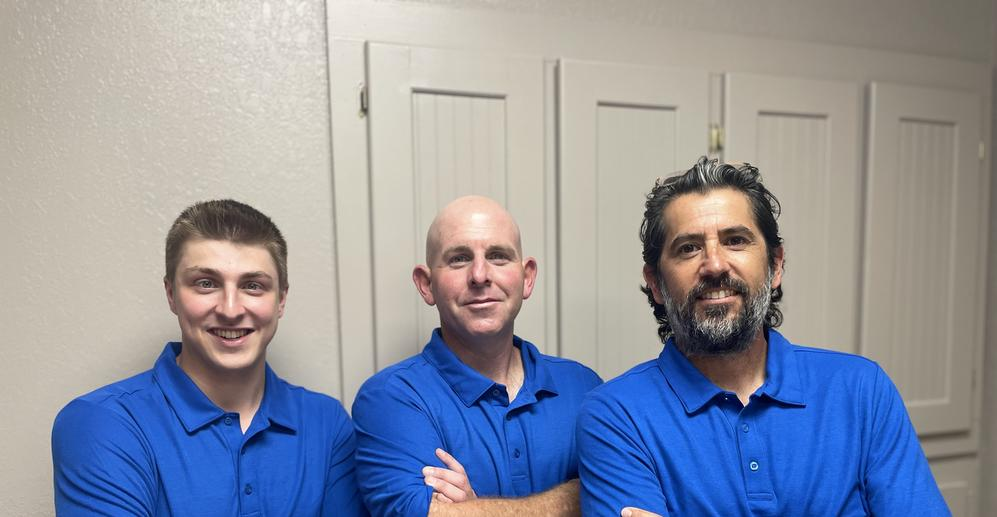

Home
Welcome to our website!
About
Learn more about our company.
Contact
Get in touch with us!
Call 352-220-4994 today and let us know how we can help you!
Don't have time to call? Email us at danieltorresinc@gmail.com and we'll be glad to help!
Our Services
Home Inspections - What we inspect
- Foundation
- Roof
- Exterior and Siding
- Heating and Cooling System
- Electrical System
- Plumbing System
- Water Heater
- Attics
- Garage Doors and Openers
- Irrigation Systems
- Gutters and Downspouts
- Flooring and Walls
- Porches and Decks
- Site and Drainage
- Windows and Doors
4 Point Inspections
A 4 Point Inspection Report is used by insurance companies to verify the 4 main points of your home. The components are as follows:
- Electrical System - Age, Amps, Brand, Branch Wiring, Condition
- Heating System - Age, Type, Working Condition
- Plumbing System - Type of Pipes, Working Condition
- Roof - Material, Age, Remaining Useful Life, Overall Condition
Wind Mitigations
A Wind Mitigation Report is used by insurance companies to verify the components that qualify for discounts on your homeowners insurance. As may people are aware the building codes have been improved significantly over the past couple decades. As part of these improvements insurance companies grant discounts and credits to clients overall homeowners insurance premiums with a wind mitigation report. The components are as follows:
- Building Code - Year the home was built
- Roof Covering - Permits applied for after March 1, 2002
- Roof Deck Attachment - Nailing to Deck / Size and Spacing
- Roof to Wall Attachment - Strapping Present and Type
- Roof Geometry - Hip, Flat, or Other
- Secondary Water Resistance - Peel and Stick Under-layment
- Opening Protection - Impact Resistant Cover
Roof Certifications
A Roof Certification Report is used by insurance companies to verify the overall condition of the roof of your home. The components are as follows:
- Roof - Material, Age, Remaining Useful Life, Overall Condition
Pool and Spa Inspections
A Pool Inspection is generally done in conjunction with a home inspection. The components are as follows:
- Pump(s)
- Valves
- Filter
- Blowers
- Heaters
- Pool Surface
- Deck Surface
- Skimmer
- Timer Box
- Lights
- Ladder(s)